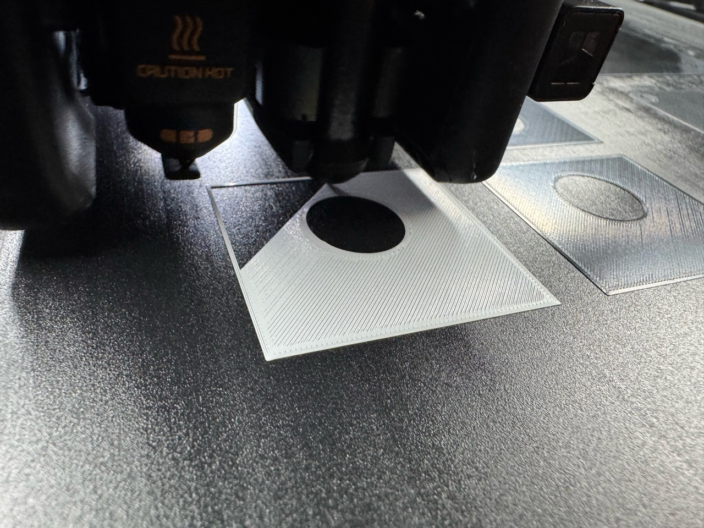

BAMBU LAB H2C
From plate to first layer
Mark1 and Mark2 have their own first-layer compensation. Read what the prepared archive actually commands.

Trace the effective trim
The standard-layer Wago job emitted G29.1 Z{{wago:/slice/firmware_z_trim_mm}} for Mark1 on Textured PEI. Read the prepared job and the plate-specific runbook entry for every setup.
- Choose the article and machine. Match the prepared archive, current target state, hotend side and diameter, loaded spool and plate. Mark1 uses the connection key
H2C. PET-GF may report as PET-CF. Derek’s instruction to start on the named printer establishes bed clearance. - Review the footprint and startup. Check model, brim and support bead extents. Center small plates on seasoned area. Verify the effective trim in the emitted commands.
- Send once and read back. Check the target and material tile in Connect or Studio. Use the job’s specified send options. Follow the shared-circuit spacing before a second machine starts or resumes. Confirm the accepted task ID and archive. Watch the first model layer for adhesion and consistent roads.
- Keep the job with its result. Follow the runbook’s spool and extrusion recovery procedures when needed. Save the photo and operator’s observation with the job.
Printer runbook · Trim table · Shared circuit · Protected printer controls · Identification-set record